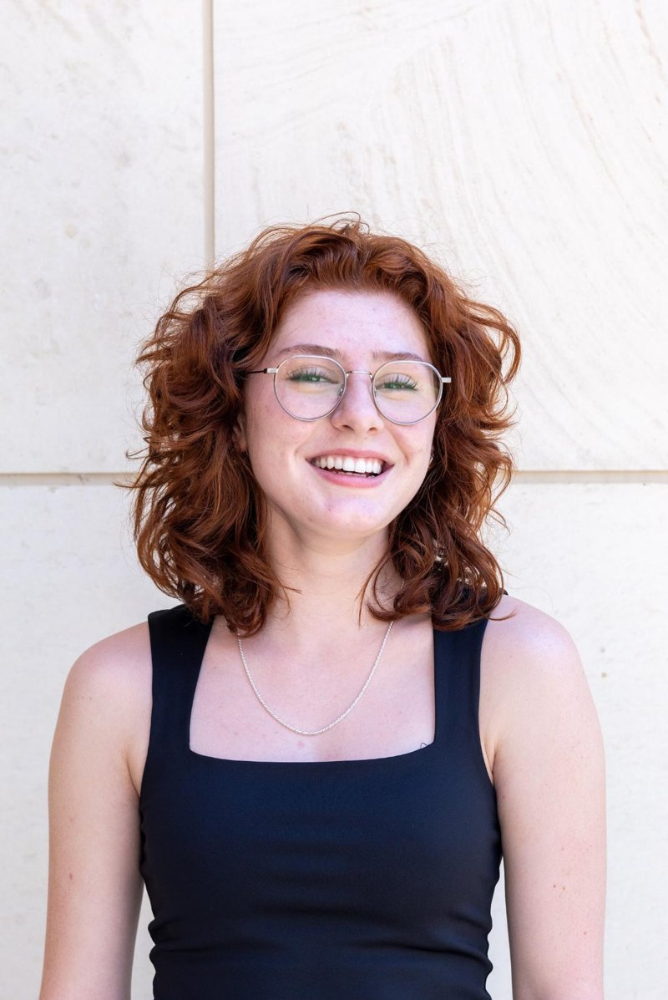

Olyvia Coltharp
Olyvia is a worship leader serving at First Baptist Church in Salado, Texas, and finishing her Bachelor of Music in Church Music at the University of Mary Hardin-Baylor. She loves helping a congregation sing together and building teams that serve with excellence.

Meet Olyvia
A heart for leading God's people in worship
My Story
My journey of faith and worship ministry began when I was fourteen years old. I had accepted Jesus as my Lord and Savior at a summer camp the year before, but I had not grown up heavily involved in church. Austin Ridge Bible Church became my first church home, where I began learning what it meant to be part of a church community and serve through music. My twin sister initially encouraged me to audition for the student worship team, and what began as a somewhat unfamiliar opportunity quickly became an important part of my life.
As I became more involved, I discovered that worship was about much more than performing music. It was about sharing my faith, serving others, and creating opportunities for people to encounter the Gospel. What began as an opportunity to serve on a student worship team at fourteen gradually became a calling I could no longer ignore. As I took on more responsibility in worship ministry, I developed a desire to help others experience the joy of knowing Christ through music. That desire eventually led me to pursue a degree in Church Music at the University of Mary Hardin-Baylor.
My Calling
My time at UMHB has challenged and shaped my understanding of worship, helping me recognize the responsibility that comes with leading the church in song. Through my studies and experiences, I have grown to understand that calling is not necessarily about knowing exactly where God will lead me, but faithfully using the gifts and opportunities He has placed in front of me. My internship at First Baptist Salado has continued to affirm that calling, giving me opportunities to grow as a musician, leader, and servant of the local church.
What I Believe About Worship
I believe worship is about making the Gospel more evident. It is much more than singing songs on a Sunday morning; it is an opportunity for the church to encounter the character of God, respond to His truth, and carry the message of the Gospel into everyday life. I believe congregational worship should be grounded in Scripture, centered on the Triune God, and shaped by the truth of the Gospel.
As a worship leader, I believe my responsibility is not to perform or draw attention to myself, but to encourage and equip the congregation to participate in worship. The songs we choose should teach biblical truth, communicate sound theology, and give believers something meaningful to carry with them throughout the week. I want people to leave a worship service remembering not just the music, but the truths they sang.
I also believe worship ministry is about developing others and creating opportunities for the church to use the gifts God has given them. My desire is to lead with humility, authenticity, and joy, always remembering that the purpose of worship is to glorify God and serve His people.
What I Bring
I love the variety of responsibilities that come with serving in worship ministry. Whether I am leading from vocals or keys, rehearsing with a band or choir, planning a Sunday morning service, or working behind the scenes in the tech booth, I enjoy being part of the many details that help bring a service together.
I especially value the opportunity to work alongside other musicians and develop their gifts. I believe a worship leader should do more than lead from a platform; they should help create an environment where others feel equipped and encouraged to serve. I enjoy both the musical and organizational sides of ministry and appreciate the opportunity to contribute wherever I am needed.
Beyond the Platform
Outside of ministry, I am a wife and mom, and my family is one of the greatest blessings in my life. Balancing marriage, motherhood, school, and ministry has taught me a lot about patience, perspective, and depending on God's guidance in every season.
I am still learning, growing, and discovering what God has planned for my future. I may not know exactly what my ministry will look like years from now, but I know that I want my life, both inside and outside the church, to reflect Christ. I believe ministry happens in the everyday moments just as much as it does on a Sunday morning, and I hope to continue using the gifts God has given me to encourage others, serve faithfully, and make His love known wherever He leads me.
Worship & performance
Highlights from leading worship at First Baptist Salado and beyond.
Olyvia Coltharp
Ministry
- Leads full worship sets in Sunday services from vocals and keyboard
- Serves weekly as soloist and choir member
- Rehearses the worship band and choir
- Plans services and builds service orders in Planning Center
- Runs sound, lighting and ProPresenter for weddings, funerals, graduations and special services
- Trains under Dr. Pendergraft in worship planning and music ministry
- Served as head student worship leader during a staff transition, starting at age 14
- Led contemporary worship for student ministry services and events
Education
Skills
- Vocal
- Soprano; worship leader, soloist, choir section leader
- Instrumental
- Keyboard
- Musicianship
- Reads sheet music and chord charts
- Leadership
- Band and choir rehearsals, service planning, volunteer teams
- Technology
- Planning Center, ProPresenter, sound boards, lighting
Ensembles
- One Voice, UMHB (auditioned vocal ensemble)
- University Choir, section leader
- Commercial Music Ensemble (current)
- Opera & Musical Theatre Program
References
Let's talk about serving together
Olyvia would love to hear about your church and how she might serve alongside your team.
hello@olyviacoltharp.comBased in Temple, Texas